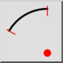
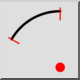
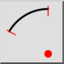
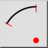

Center, Point, Angles
Toolbar / Icon:
 

Menu: Draw > Arc > Center, Point, Angles
Shortcut: A, R
Commands: arcc | ar
Toolbar / Icon:
 

Menu: Draw > Arc > Center, Point, Angles
Shortcut: A, R
Commands: arcc | ar
Draws an arc from its center point, a point on the arc line, start angle and end angle.